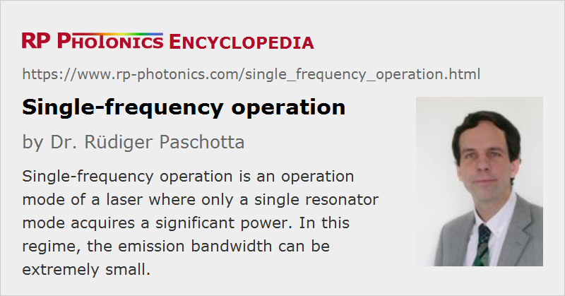

Single-frequency Operation
Definition: an operation mode of a laser where only a single resonator mode acquires a significant power
Opposite term: multimode operation
German: einmodiger Betrieb
How to cite the article; suggest additional literature
Author: Dr. Rüdiger Paschotta
A laser can be made to operate on a single mode of its resonator, and is then called a single-frequency laser. The linewidth of the laser radiation can then be very small – often only a few kilohertz – and the coherence length accordingly long. In contrast, multimode operation causes the linewidth to be a multiple of the mode spacing (free spectral range) of the resonator. Single-frequency operation is required e.g. to drive resonant cavities (e.g. for efficient frequency doubling in an external enhancement cavity), for high-resolution laser spectroscopy, for coherent beam combining of laser outputs, and for applications where the intensity noise must be very low. The emission linewidth can be extremely small for single-frequency operation – far below the longitudinal mode spacing of the resonator, and many orders of magnitude below the gain bandwidth. The theoretical limit is the Schawlow–Townes linewidth, determined by quantum noise. In most cases, however, the Schawlow–Townes limit is very hard to reach, since technical noise influences (e.g., acoustic noise and thermal fluctuations) are difficult to suppress to the required extent.
Single-frequency operation is usually obtained when the bandwidth of the net gain is smaller than the frequency spacing of the resonator modes. (The laser should operate on the fundamental transverse mode only, i.e. emit a diffraction-limited beam, in order to eliminate the different mode frequencies of higher-order transverse modes.) For gain media with large bandwidth, single-frequency operation can still be achieved by using some optical filters (e.g. an etalon) in the resonator and/or by making the resonator short (thus increasing the mode spacing to obtain a large free spectral range).
Note that reduced mode competition, e.g. inhomogeneous gain saturation caused by spatial hole burning in a standing-wave resonator, can make it difficult to achieve single-frequency operation. Therefore, single-frequency operation is often realized with unidirectional ring lasers, or sometimes with the twisted-mode technique. In fiber lasers and amplifiers, additional problems arise from stimulated Brillouin scattering.
It might be expected that intracavity frequency doubling is not readily compatible with single-frequency operation, but the opposite is true: via sum frequency generation, the intracavity nonlinearity even protects the lasing modes by introducing higher losses for other modes.
The concept of distributed feedback lasers is often used for achieving single-frequency operation, particularly for semiconductor lasers and fiber lasers. This usually leads to fairly short laser resonators.
Thermal drifts, e.g. of the gain medium, can cause occasional mode hopping, i.e. the change from one oscillating resonator mode to another. To a limited extent, this can be acceptable for applications.
If a high optical power in a single-frequency signal is required, a master oscillator power amplifier configuration can be employed. An alternative with potentially lower laser noise is injection locking of a high-power laser with a single-frequency low-power laser.
The article on single-frequency lasers discusses different types of lasers for single-frequency operation.
Questions and Comments from Users
Here you can submit questions and comments. As far as they get accepted by the author, they will appear above this paragraph together with the author’s answer. The author will decide on acceptance based on certain criteria. Essentially, the issue must be of sufficiently broad interest.
Please do not enter personal data here; we would otherwise delete it soon. (See also our privacy declaration.) If you wish to receive personal feedback or consultancy from the author, please contact him e.g. via e-mail.
By submitting the information, you give your consent to the potential publication of your inputs on our website according to our rules. (If you later retract your consent, we will delete those inputs.) As your inputs are first reviewed by the author, they may be published with some delay.
See also: single-frequency lasers, single-mode operation, Schawlow–Townes linewidth, modes of laser operation, resonator modes, mode competition, mode hopping, twisted-mode technique, The Photonics Spotlight 2006-09-03b
and other articles in the category lasers
|  |
If you like this page, please share the link with your friends and colleagues, e.g. via social media:
These sharing buttons are implemented in a privacy-friendly way!